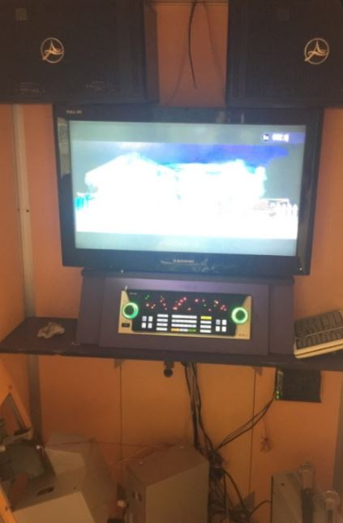
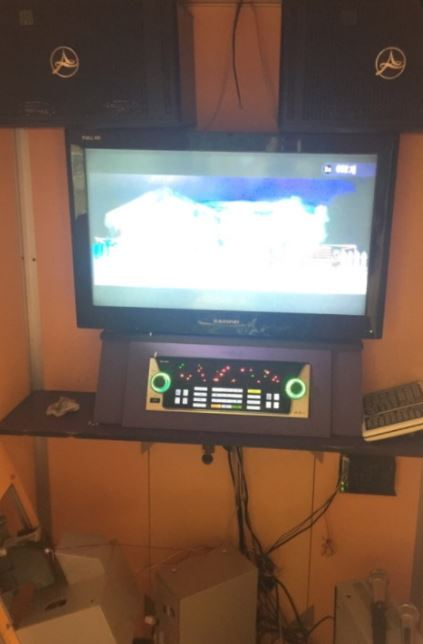

My life is beautiful, wonderful, joyful His future NGO설립, 교육사업 은퇴후 작은 마을의 분식집  집에 노래방설치 My life is beautiful, wonderful, joyful 자기소개 나의 블로그 나의 미래 Please enable JavaScript to view the comments powered by Disqus.
NGO설립, 교육사업 은퇴후 작은 마을의 분식집  집에 노래방설치